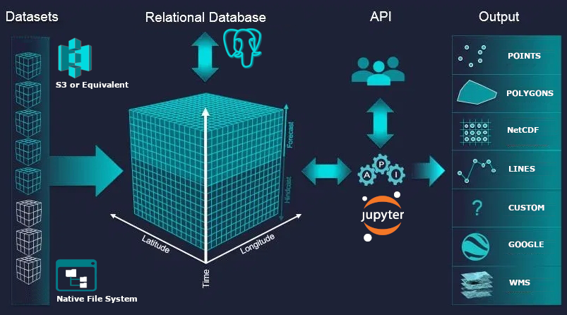

Advancement in hydrological sciences as a data-intensive science needs to explore effective approaches for the use and analysis of the petabytes of existent Eath Observation data
Quantifying water security using hyperresolution hydrological modelling on top of an Open Data Cube (ODC)
Luis Felipe Patino Velasquez 1, 
@felpave
l.f.patino-velasquez2@ncl.ac.uk
Dr. Elizabeth Lewis1 Prof. John Mills1
1 School of Civil Engineering and Geosciences, Newcastle University, Newcastle upon Tyne, UK
1 CONTEXT
Given the current and forecast pressures over regional and global water systems as result of population grow and human activities, water security has been recognised as one of the most significant challenges of the 21st century (Srinivasan, Konar, and Sivapalan (2017)). As a result, rigorous quantification of the impacts of climate change on water security have a key role informing water management and policy, and to support the progress in the implementation of the Sustainable Development Goals (SDGs) (Eekhout et al. (2018)).
2 THE RESEARCH
This research will be at the junction of three areas: hydrological physical modelling, satellite Earth observation data and cloud computing technology. During the past two decades the development of hydrological predictions at spatial resolution on the order of 1 km or less has been recognised as a grand challenge in hydrology. Now that the advances in satellite and sensor technology coupled with the development of cloud computing have enable the advancement of hydrology as a data-intensive science, there is a considerable impetus and interest in future research and approaches in the use of these emerging technologies to develop new insights that contribute to fundamental aspects of the hydrological sciences.
3 AIM
To evaluate water security at a regional scale as part of the collaborative laboratories (collaboratories) that form part of the Water Security & Sustainable Development Hub by implementing a hyperresolution hydrological modelling approach to quantify water scarcity and vulnerability.
4 THE KNOW HOW
4.1 Computational Framework
Open Data Cube (ODC)

Figure 4.1: ODC storing, sharing and publishing of the data architecture (image modified from https://www.cursosteledeteccion.com/la-iniciativa-global-open-data-cube/ accessed 2022-05-03
4.2 Water Security Assessment
PBSD - SHETRAN
Simulation of hydrological processes related to blue and green water cycles such as rainfall interception by vegetation, evaporation and transpiration, variably saturated subsurface flow, and river/aquifer interactions.
Figure 4.2: Conceptualisation of catchment hydrology in SHETRAN (image designed by Dr. E. Lewis)
Water security analysis
The impact of climate change on water security will consider the distribution of green water (e.g. soil moisture as result of infiltration); and blue water (e.g. waterflows through the land surface) storage.
References
Eekhout, Joris PC, Johannes E Hunink, Wilco Terink, and Joris de Vente. 2018. “Why Increased Extreme Precipitation Under Climate Change Negatively Affects Water Security.” Hydrology and Earth System Sciences 22 (11): 5935–46.
Srinivasan, Veena, Megan Konar, and Murugesu Sivapalan. 2017. “A Dynamic Framework for Water Security.” Water Security 1: 12–20.